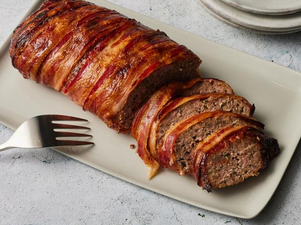

Meatloaf Recipe
Great for if you want to show off in front of your family and friends!

Ingrediants
- 3 Slices Bread
- 1 Large Egg
- 1 Cup Shredded Cheddar Cheese
- 1 Medium Onion, Finely Chopped
- 1/2 Cup Finely Shredded Carrot
- 1 tsp. Salt
- 1/4 tsp. Pepper
- 1 - 1 1/2 Pounds Ground Beef
- (Optional) Glaze
- 1/4 Cup Packed Brown Sugar
- 1/4 Cup Ketchup
- 1 tsp. Prepared Mustard
Instructions
- Preheat oven to 350°. Tear bread into 2-inch pieces; place in a blender. Cover and pulse to form coarse
crumbs; transfer to a large bowl. Stir in egg, milk, cheese, onion, carrot, salt and pepper. Add beef; mix
lightly but thoroughly. Transfer to a greased 9x5-in. loaf pan.
- In a small bowl, mix glaze ingredients; spread over loaf. Bake 60-75 minutes or until a thermometer reads
160°. Let stand 10 minutes before slicing.
Nutrition Facts
1 slice: 394 calories, 21g fat (10g saturated fat), 128mg cholesterol, 843mg sodium, 23g carbohydrate (15g
sugars, 1g fiber), 28g protein.
Other Recipes
If you like what you see here, return to our homepage